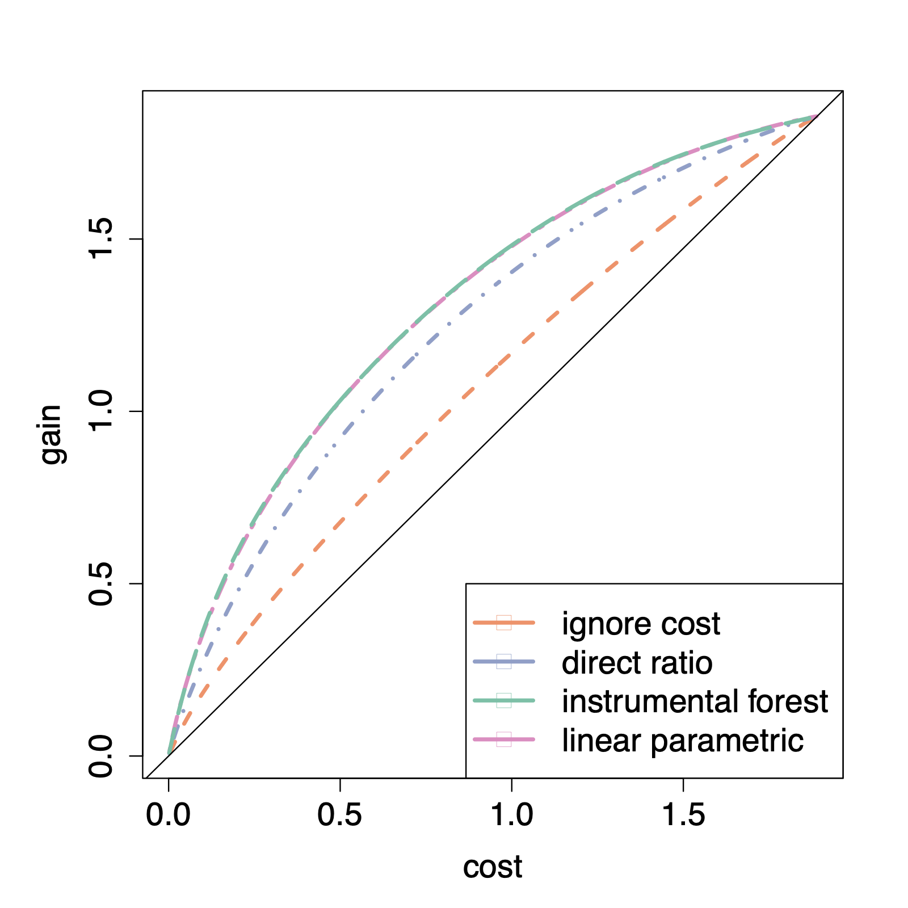
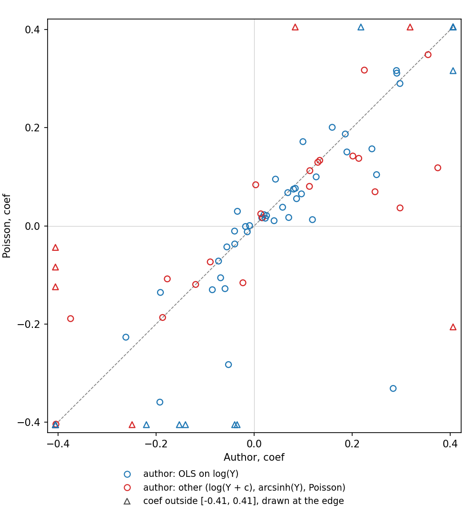
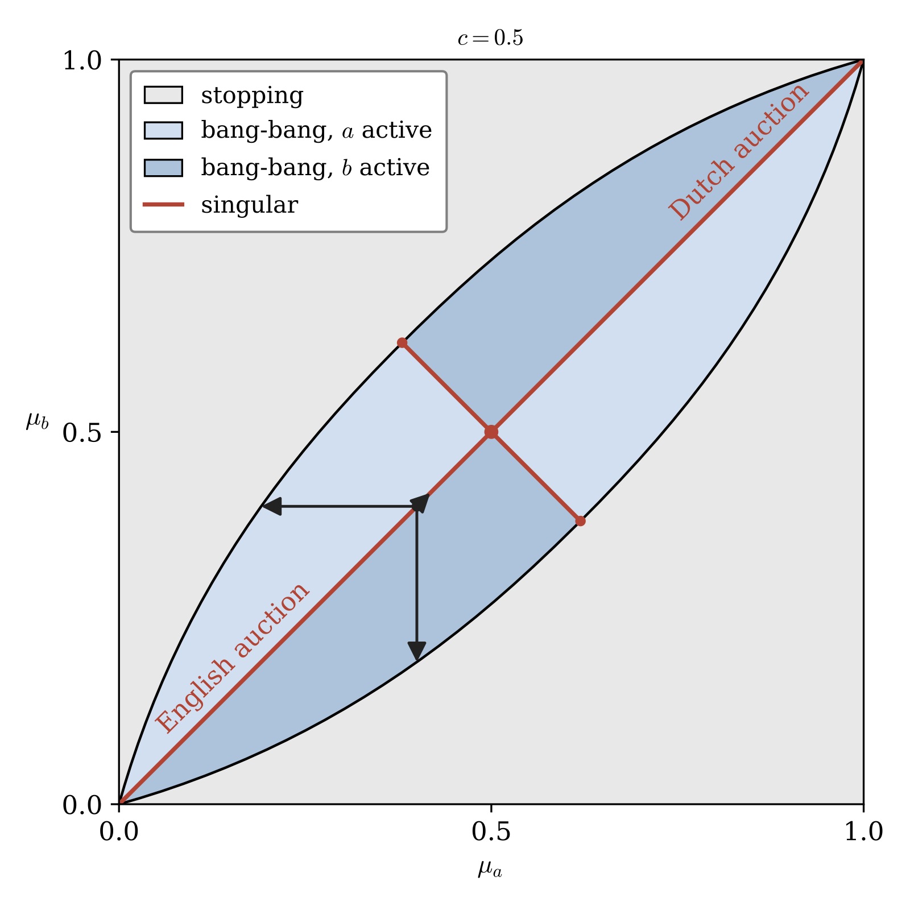
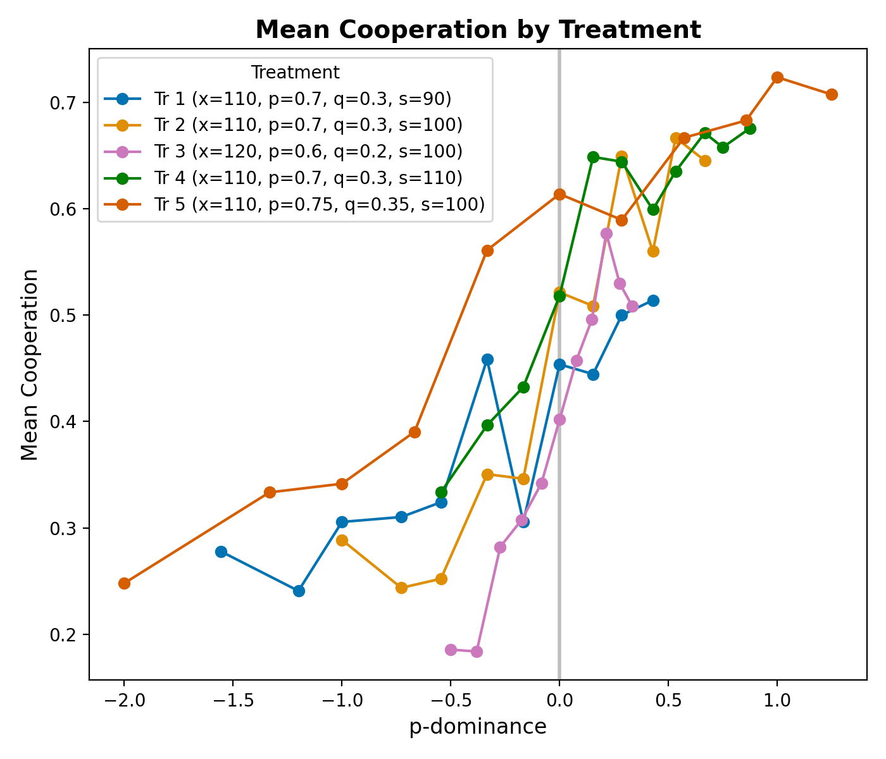

Research
Working papers
Published
We consider the problem of learning how to optimally allocate treatments whose cost is uncertain and can vary with pre-treatment covariates. This setting may arise in medicine if we need to prioritize access to a scarce resource that different patients would use for different amounts of time, or in marketing if we want to target discounts whose cost to the company depends on how much the discounts are used. Here, we show that the optimal treatment allocation rule under budget constraints is a thresholding rule based on priority scores (those with a higher score are treated first), and we propose a number of practical methods for learning these priority scores using data from a randomized trial. Our formal results leverage a statistical connection between our problem and that of learning heterogeneous treatment effects under endogeneity using an instrumental variable. We find our method to perform well in a number of empirical evaluations.

This paper assesses changes in the dynamics of applications for unemployment benefits in response to the abolition of regional restrictive measures during the first wave of COVID-19 spread in Russia. This assessment is interesting from the perspective of developing anti-crisis support measures for the population. The assessment is based on weekly-regional panel data using the staggered difference-in-differences method. After the lifting of restrictive measures, the number of new applications for unemployment benefits does not decrease significantly. The result remains robust when an alternative measure of the stringency of restrictions is used, such as an indicator for the validity period of digital passes instead of data on the stages of lifting restrictions. A comparison of official data on the effect of restrictive measures with the Yandex self-isolation index is provided.
Work in progress
We study the properties of Poisson regression under heterogeneous treatment effects as a better choice compared to log-linear regression in policy evaluation setting. Log-linear regression aggregates multiplicative individual effects from both large and small subjects with equal weights. However, a policy evaluation study is interested in a ratio of the means rather than mean of the ratios, which is to give weights proportional to the subject sizes. We show that Poisson regression estimates exactly the ratio of means in different specifications. We also show a double robust way to estimate an average treatment effect in Poisson regression.

I study the allocation of a single indivisible good between two buyers when eliciting their private valuations is costly. Communication cost is the expected reduction in the uncertainty of the designer's belief about a buyer's valuation, and the designer's problem becomes a two-sided dynamic information-acquisition problem. I show that a welfare-maximizing designer can always choose transfers that make the desired protocol sequentially rational. Further, using the bi-concavification technique, I characterize the pairs of beliefs at which it is optimal to stop and allocate the good. Finally, I provide an optimal protocol under a tractability restriction: I give a full characterization of the optimum via Pontryagin's maximum principle.

Holmström (1982) shows that a collective penalty, imposed on the whole team when output is low, can sustain the efficient equilibrium in moral hazard in teams. Because output is noisy, the penalty is also paid on the equilibrium path, so standard theory prescribes the smallest penalty that makes the efficient outcome an equilibrium. Yet experiments show that coordination on an efficient equilibrium is fragile when a safer equilibrium coexists (Van Huyck et al., 1990; Cooper et al., 1990). A larger penalty makes the efficient equilibrium more robust to this strategic uncertainty but wastes more surplus. This creates a robustness–efficiency trade-off. We study this trade-off in a laboratory experiment. Starting from a Prisoner's Dilemma with no penalty, we add penalties of varying size. We show that the main predictor of cooperation is p-dominance: cooperation is p-dominant if it is a best response whenever the partner cooperates with probability at least p, so a lower p means a more robust equilibrium. Cooperation increases when the efficient equilibrium appears and keeps rising as p falls. Holding p fixed, the size of the penalty has no predictive power. Designers resolving the trade-off should therefore target p-dominance, not the mere existence of the equilibrium.

Econometric methods
We study the properties of Poisson regression under heterogeneous treatment effects as a better choice compared to log-linear regression in policy evaluation setting. Log-linear regression aggregates multiplicative individual effects from both large and small subjects with equal weights. However, a policy evaluation study is interested in a ratio of the means rather than mean of the ratios, which is to give weights proportional to the subject sizes. We show that Poisson regression estimates exactly the ratio of means in different specifications. We also show a double robust way to estimate an average treatment effect in Poisson regression.
We consider the problem of learning how to optimally allocate treatments whose cost is uncertain and can vary with pre-treatment covariates. This setting may arise in medicine if we need to prioritize access to a scarce resource that different patients would use for different amounts of time, or in marketing if we want to target discounts whose cost to the company depends on how much the discounts are used. Here, we show that the optimal treatment allocation rule under budget constraints is a thresholding rule based on priority scores (those with a higher score are treated first), and we propose a number of practical methods for learning these priority scores using data from a randomized trial. Our formal results leverage a statistical connection between our problem and that of learning heterogeneous treatment effects under endogeneity using an instrumental variable. We find our method to perform well in a number of empirical evaluations.
Mechanism design
I study the allocation of a single indivisible good between two buyers when eliciting their private valuations is costly. Communication cost is the expected reduction in the uncertainty of the designer's belief about a buyer's valuation, and the designer's problem becomes a two-sided dynamic information-acquisition problem. I show that a welfare-maximizing designer can always choose transfers that make the desired protocol sequentially rational. Further, using the bi-concavification technique, I characterize the pairs of beliefs at which it is optimal to stop and allocate the good. Finally, I provide an optimal protocol under a tractability restriction: I give a full characterization of the optimum via Pontryagin's maximum principle.
Holmström (1982) shows that a collective penalty, imposed on the whole team when output is low, can sustain the efficient equilibrium in moral hazard in teams. Because output is noisy, the penalty is also paid on the equilibrium path, so standard theory prescribes the smallest penalty that makes the efficient outcome an equilibrium. Yet experiments show that coordination on an efficient equilibrium is fragile when a safer equilibrium coexists (Van Huyck et al., 1990; Cooper et al., 1990). A larger penalty makes the efficient equilibrium more robust to this strategic uncertainty but wastes more surplus. This creates a robustness–efficiency trade-off. We study this trade-off in a laboratory experiment. Starting from a Prisoner's Dilemma with no penalty, we add penalties of varying size. We show that the main predictor of cooperation is p-dominance: cooperation is p-dominant if it is a best response whenever the partner cooperates with probability at least p, so a lower p means a more robust equilibrium. Cooperation increases when the efficient equilibrium appears and keeps rising as p falls. Holding p fixed, the size of the penalty has no predictive power. Designers resolving the trade-off should therefore target p-dominance, not the mere existence of the equilibrium.
Applied research
This paper assesses changes in the dynamics of applications for unemployment benefits in response to the abolition of regional restrictive measures during the first wave of COVID-19 spread in Russia. This assessment is interesting from the perspective of developing anti-crisis support measures for the population. The assessment is based on weekly-regional panel data using the staggered difference-in-differences method. After the lifting of restrictive measures, the number of new applications for unemployment benefits does not decrease significantly. The result remains robust when an alternative measure of the stringency of restrictions is used, such as an indicator for the validity period of digital passes instead of data on the stages of lifting restrictions. A comparison of official data on the effect of restrictive measures with the Yandex self-isolation index is provided.